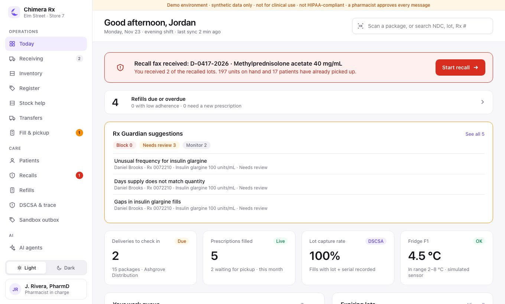
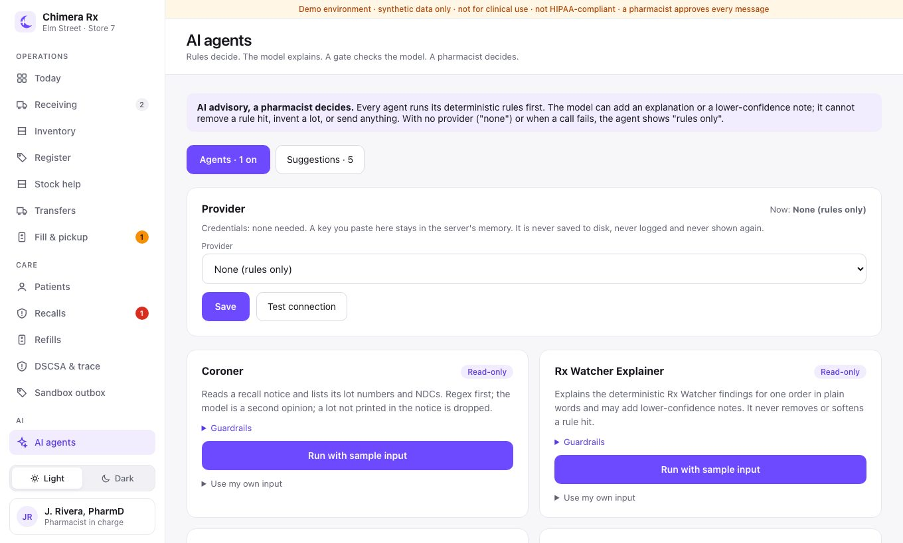

Chimera Rx
A modern, agent-assisted pharmacy system. One ledger holds the lot, the patient and the prescription history. Agents watch it in the background, and a pharmacist decides. A recall is the sharpest proof: it turns a drug lot into the units on the shelf and the patients who took one home.
Kiroween 2026, Frankenstein category. Built with Kiro.
The pharmacy runs on yesterday's software
- Wholesalers track a package by lot and serial. Dispensing software tracks the patient and the drug. Nothing links the two, so a recall means warning everyone or no one.
- Recalls and prescriber changes still travel by fax and phone. Cold-chain and count checks are paper or a spreadsheet.
- Alerts get overridden. In a study of community pharmacies, 289 of 510 relevant interaction alerts were overridden with no action.
- Staff are stretched: 74.9 percent of 412 surveyed community pharmacists reported burnout in at least one domain.
- Package-level traceability is the rule under the DSCSA. Small dispensers have an FDA exemption to November 27, 2027. Check your own status with the FDA.
Sources and the full case: README and MODERNIZATION.md.

Try it
Open in GitHub Codespaces: it installs, seeds synthetic data and opens the app in your browser. Or run it locally:
git clone <this repo> cd chimera-rx docker compose up # then open http://localhost:4000 # or, with Node 22.5+ and pnpm 12: pnpm install --frozen-lockfile pnpm setup pnpm dev # open http://localhost:5173
Sign in as j.rivera@elmstreetrx.example with moonlight-rx-2026 (pharmacist). Type them on the sign-in page (synthetic accounts; the form is not pre-filled), then look up recall D-0611-2026 on Recalls. The Docker image build was not run on the machine that wrote this repo.
Gaps we close
| Old way | Chimera Rx way |
|---|---|
| A recall does not say who got the lot | Recall to shelf units and patients, quarantine, approved outreach |
| The lot is never captured | GS1 DataMatrix and OCR at receiving and at fill |
| Alerts come one at a time and get overridden | Rx Watcher rules and the Rx Guardian, a patient-history check that cites its evidence |
| Refills ignore recalls and adherence | Recall-aware refills, adherence, med sync |
| Traceability data is hard to exchange | EPCIS 2.0 export, sandbox verifier, suspect cases |
| Cold chain and counts on paper | Receiving temperature check (simulated data), witnessed Schedule II counts |
| Front store is separate | Register with verified prescriptions |
| Each store is an island | Two stores, transfers, mirrored recalls |
| Other systems cannot ask | REST, MCP and FHIR with scoped keys |
| Logs can be edited | Hash-chained audit log |
Agents that work while you work
Eight agents follow one rule: rules decide, the model explains, a gate checks the model, a pharmacist decides. Four can run in the background once a pharmacist switches them on. The Rx Guardian checks each new order against the patient's history and raises suggestions that a pharmacist accepts or dismisses. Amazon Bedrock is the default model provider, and you can bring your own.

Documents
- Demo recording script: 3-minute and 8-minute paths
- Architecture
- Modernization: the case by role, roadmap and 90-day pilot plan
- AI agents and providers
- Safety rules mapped to code and tests
- Security and patient data: what is encrypted and what is not
- DSCSA traceability with EPCIS and refills
- How Kiro was used, and what was not verified
- Lot extraction on 50 real openFDA recall records
- Recall to affected-patient list timing
Demo video
A 2:50 walkthrough of the running app: receiving, fill, cashier, admin, a recall end to end, the AI agents and the integration placeholders. Synthetic data only.
Demo environment · synthetic data only · not for clinical use · not HIPAA-compliant · a pharmacist approves every message